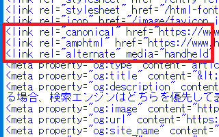
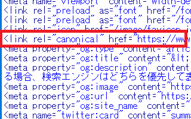

<link rel="canonical"でURLを正規化
同じ内容なのに重複したページが存在する場合、検索エンジンはどちらを検索結果で優先して表示させればよいのか分からなくなります。
そのため、<head>タグ内に以下の<link rel="canonical"のカノニカルタグを記載し、代表となる正規のURLを明確に指定する必要があります。
<link rel="canonical" href="https://www.example.com/sample.html">
「/sample.html」のような相対リンクで記述してしまうと「http」と「https」の二つのバージョンが出てきてしまうため、完全な形のURLをひとつだけ指定して絶対リンクで一義的に明示するようにします。
例えば、ホームページをモバイル端末に最適化する際、ひとつの個別ページに対して「m.example.com」などのスマホ版や携帯ページ版、あるいはAMPページ版を作成することになります。
このような場合、同じ内容で重複してしまうため、<link rel="canonical"のカノニカルタグを記載して、代表となるPC版のURLを正規ページとして明示するとよいでしょう。
モバイル版ページで正規化する例
一般的なレスポンシブウェブデザインのサイトの場合、PC版を正規ページとした上で、そちらに携帯ページ版の<link rel="alternate" media="handheld"やAMPページ版の<link rel="amphtml"を指定します。
■PC版（正規ページ）へ記載する内容
<link rel="alternate" media="handheld" href="ガラケー携帯ページ版のURL">
<link rel="amphtml" href="AMPページ版のURL">
■ガラケー携帯ページ版に記載する内容
<link rel="canonical" href="PC版のURL">
■AMPページ版に記載する内容
<link rel="canonical" href="PC版のURL">
ガラケー版やAMP版の指定については、正規ページのみに記載するようにしましょう。
例えば、このページのPC版は以下のように記載しています。
■このページのPC版の例

当サイトでは、全ページに<link rel="canonical"タグを記載しているため、PCページについては自分自身のURLに正規化しています。また、<link rel="amphtml"でAMPバージョンのページがあることを通知しています。さらに、<link rel="alternate" media="handheld"で携帯版ページの存在を通知しています。
■このページのAMP版の例

一方、AMP版のページについては、PC版ページへのカノニカルタグのみを記載しています。
Googleでは「モバイルファーストインデックス」により、モバイル版をインデックスのメインに使用するように仕様が変更されましたが、この変更に合わせて<link rel="canonical"でモバイル版へ正規化しなおす必要はありません。
<link rel="canonical"は他の検索エンジンでも使用しており、一般的にはPC版のページを正規ページに指定することになります。
<link rel="canonical"で自分自身へ正規化
当サイトでは重複の有無に関わらず、全ページに<link rel="canonical"タグを挿入していますが、自分自身に正規化しても問題ありません。
<head>タグ内は、ガラケー版やAMPページ版、あるいはOGPタグなど、年々記載すべき内容が多くなってきています。そのため、個別ページごとに記載したりしなかったりするよりも、一律で全ページに記載しておいた方が管理はしやすくなるはずです。
加えて、違うドメイン間でも有効なため、何らかの理由でサイトが丸ごとコピーされた場合でも、<link rel="canonical"の記載があれば、正規ページがどれなのかを明示することができます。
また、SNSに最適化する際のOGPタグにも<meta property="og:url" content="ページのURL">の正規化カノニカルタグがありますが、通常はこちらのURLと同じように記載しておけば問題ないでしょう。
サイトの移転には301リダイレクトも併用する
<link rel="canonical"は違うドメイン間でも有効なため、サイトを移転した際にも役に立ちますが、基本的には.htaccessの301リダイレクトで永久に転送されることをおすすめします。
無料ホームページからの引越など、.htaccessの使えない環境ではメタタグの「0秒」リダイレクトで移転する形になるかと思いますが、そのような際には<link rel="canonical"も併用されるとよいでしょう。また、Search Consoleでも移転を直接通知しておけば確実かと思います。
また、A → Bに正規化した状態で、さらにB → Cのように正規化するのではなく、A → C、B → Cへと直接正規化することをおすすめします。
いずれにしても、全ページに<link rel="canonical"タグを記載しておくことをおすすめします。